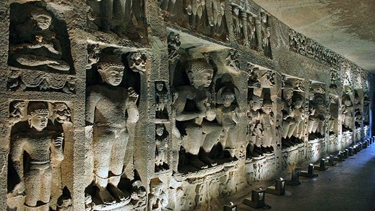

Ajanta caves

The Ajanta Caves are about 29 rock-cut Buddhist cave monuments which date from the 2nd century BCE to about 480 or 650 CE in Aurangabad district of Maharashtra state of India.[1][note 1] The caves include paintings and rock cut sculptures described as among the finest surviving examples of ancient Indian art, particularly expressive paintings that present emotion through gesture, pose and form

HOW TO REACH ?
Nearest Airport: Aurangabad
Nearest Railway Station:Aurangabad
Nearest Bus Stand:Aurangabad